class TLatex: public TText, public TAttLine
TLatex : to draw Mathematical Formula
- Subscripts and Superscripts
- Fractions
- Splitting Lines
- Roots
- Mathematical Symbols
- Delimiters
- Greek Letters
- Accents
- Changing Style
- Alignment Rules
- Character Adjustement
- Italic and Boldface
- Examples
- Interface to TMathText
Subscripts and Superscripts
Subscripts and superscripts are made with the _ and ^ commands. These commands can be combined to make complicated subscript and superscript expressions. You may adjust the display of subscripts and superscripts by using the two functions SetIndiceSize(Double_t), which set relative size of subscripts and superscripts, and SetLimitIndiceSize(Int_t), which set limits for text resizing of subscipts and superscripts.Examples:
x^{2y} : 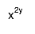
x_{2y} : 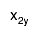
x^{y^{2}} : 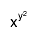
x^{y_{1}} : 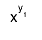
x^{y}_{1} :  x_{1}^{y} :
x_{1}^{y} : 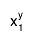
The best way to put the subscipts and superscripts before the character and not
after, is to use an empty character:
{}^{40}_{20}Ca : 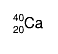
The subscripts and superscripts operators apply not only on one character but
on all the "normal text" preceding them. In the following example the second
E is lower than the first one because the operator _ is
applied on /f which has a descending part, and not only on f
which as no descending part.
f_{E}/f_{E} : 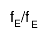
To make sure the second operator _ applies only on f
a dummy operator ^{} should be introduced to separate the f
from the /.
f_{E}/^{}f_{E} : 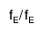
Fractions
Fractions denoted by the / symbol are made in the obvious way. The #frac command is used for large fractions in displayed formula; it has two arguments: the numerator and the denominator.Examples:
x = #frac{y+z/2}{y^{2}+1} : 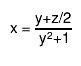
Splitting Lines
Text can be split in two lines via the command #splitline.Examples:
#splitline{21 April 2003}{14:02:30} : 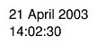
Roots
The #sqrt command produces the square root of its argument; it has an optional first argument for other roots.Examples:
#sqrt{10} : 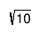
#sqrt[3]{10} : 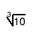
Mathematical Symbols
TLatex can display dozens of special mathematical symbols. A few of them, such as + and > , are produced by typing the corresponding keyboard character. Others are obtained with the commands in the following table:Delimiters
TLatex provides 4 kinds of proportional delimiters:
#[]{....} or "a la" Latex #left[.....#right] : big square brackets
#{}{....} or #left{.....#right} : big curly brackets
#||{....} or #left|.....#right| : big absolute value symbols
#(){....} or #left(.....#right) : big parentheses
Greek Letters
The command to produce a lowercase Greek letter is obtained by adding a # to the name of the letter. For an uppercase Greek letter, just capitalize the first letter of the command name. Some letters have two representations. The name of the second one (the "variation") starts with "var". The following table gives the complete list:Accents
Several kind of accents are available:#hat =The special sign: #slash draws a slash on top of the text between brackets: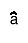
#check =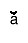
#acute =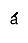
#grave =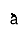
#dot =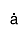
#ddot =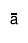
#tilde =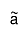
#slash{E}_{T} : 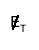
Bar and vectors sign are done the following way:
#bar{a}: 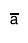
#vec{a}: 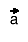
Changing Style
One can change the font, the text color, or the text size at any time using : #font[font-number]{...}, #color[color-number]{...} and #scale[scale-factor]{...}Examples:
#font[12]{Times Italic} and #font[22]{Times bold} : 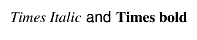
#color[2]{Red} and #color[4]{Blue} :
#scale[1.2]{Bigger} and #scale[0.8]{Smaller} : 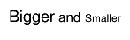
Alignment Rules
The TText alignment rules apply to the TLatex objects with one exception concerning the vertical alignment:- if the vertical alignment = 1 , subscripts are not taken into account
- if the vertical alignment = 0 , the text is aligned to the box surrounding the full text with sub and superscripts

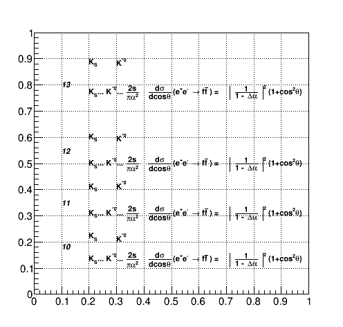
{
TCanvas Tlva("Tlva","Tlva",500,500);
Tlva.SetGrid();
Tlva.DrawFrame(0,0,1,1);
const char *longstring = "K_{S}... K^{*0}... #frac{2s}{#pi#alpha^{2}}
#frac{d#sigma}{dcos#theta} (e^{+}e^{-} #rightarrow f#bar{f} ) =
#left| #frac{1}{1 - #Delta#alpha} #right|^{2} (1+cos^{2}#theta)";
TLatex latex;
latex.SetTextSize(0.025);
latex.SetTextAlign(13); //align at top
latex.DrawLatex(.2,.9,"K_{S}");
latex.DrawLatex(.3,.9,"K^{*0}");
latex.DrawLatex(.2,.8,longstring);
latex.SetTextAlign(12); //centered
latex.DrawLatex(.2,.6,"K_{S}");
latex.DrawLatex(.3,.6,"K^{*0}");
latex.DrawLatex(.2,.5,longstring);
latex.SetTextAlign(11); //default bottom alignment
latex.DrawLatex(.2,.4,"K_{S}");
latex.DrawLatex(.3,.4,"K^{*0}");
latex.DrawLatex(.2,.3,longstring);
latex.SetTextAlign(10); //special bottom alignment
latex.DrawLatex(.2,.2,"K_{S}");
latex.DrawLatex(.3,.2,"K^{*0}");
latex.DrawLatex(.2,.1,longstring);
latex.SetTextAlign(12);
latex->SetTextFont(72);
latex->DrawLatex(.1,.80,"13");
latex->DrawLatex(.1,.55,"12");
latex->DrawLatex(.1,.35,"11");
latex->DrawLatex(.1,.18,"10");
return Tlva;
}Character Adjustement
The two commands #kern and #lower enable a better control over character placement. The command #kern[(Float_t)dx]{text} moves the output string horizontally by the fraction dx of its length. Similarly, #lower[(Float_t)dy]{text} shifts the text up or down by the fraction dy of its height.Examples:
Positive k#kern[0.3]{e}#kern[0.3]{r}#kern[0.3]{n}#kern[0.3]{i}#kern[0.3]{n}#kern[0.3]{g}:
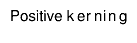
Negative k#kern[-0.3]{e}#kern[-0.3]{r}#kern[-0.3]{n}#kern[-0.3]{i}#kern[-0.3]{n}#kern[-0.3]{g}:
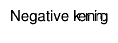
Vertical a#lower[0.2]{d}#lower[0.4]{j}#lower[0.1]{u}#lower[-0.1]{s}#lower[-0.3]{t}#lower[-0.4]{m}#lower[-0.2]{e}#lower[0.1]{n}t:
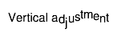
Italic and Boldface
Text can be turned italic or boldface using the commands #it and #bf.Examples:
#bf{bold}, #it{italic}, #bf{#it{bold italic}}, #bf{#bf{unbold}}}:
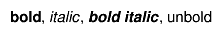
abc#alpha#beta#gamma, #it{abc#alpha#beta#gamma}:
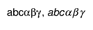
Examples

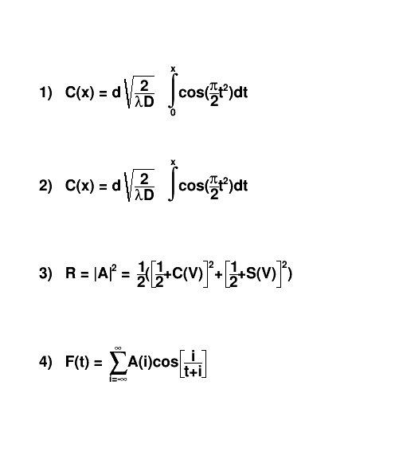
{
TCanvas ex1("ex1","Latex",500,600);
TLatex Tl;
Tl.SetTextAlign(12);
Tl.SetTextSize(0.04);
Tl.DrawLatex(0.1,0.8,"1) C(x) = d #sqrt{#frac{2}{#lambdaD}} #int^{x}_{0}cos(#frac{#pi}{2}t^{2})dt");
Tl.DrawLatex(0.1,0.6,"2) C(x) = d #sqrt{#frac{2}{#lambdaD}} #int^{x}cos(#frac{#pi}{2}t^{2})dt");
Tl.DrawLatex(0.1,0.4,"3) R = |A|^{2} = #frac{1}{2}(#[]{#frac{1}{2}+C(V)}^{2}+#[]{#frac{1}{2}+S(V)}^{2})");
Tl.DrawLatex(0.1,0.2,"4) F(t) = #sum_{i=-#infty}^{#infty}A(i)cos#[]{#frac{i}{t+i}}");
return ex1;
}
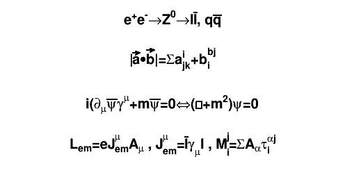
{
TCanvas ex2("ex2","Latex",500,300);
TLatex Tl;
Tl.SetTextAlign(23);
Tl.SetTextSize(0.08);
Tl.DrawLatex(0.5,0.95,"e^{+}e^{-}#rightarrowZ^{0}#rightarrowI#bar{I}, q#bar{q}");
Tl.DrawLatex(0.5,0.75,"|#vec{a}#bullet#vec{b}|=#Sigmaa^{i}_{jk}+b^{bj}_{i}");
Tl.DrawLatex(0.5,0.5,"i(#partial_{#mu}#bar{#psi}#gamma^{#mu}+m#bar{#psi}=0#Leftrightarrow(#Box+m^{2})#psi=0");
Tl.DrawLatex(0.5,0.3,"L_{em}=eJ^{#mu}_{em}A_{#mu} , J^{#mu}_{em}=#bar{I}#gamma_{#mu}I , M^{j}_{i}=#SigmaA_{#alpha}#tau^{#alphaj}_{i}");
return ex2;
}
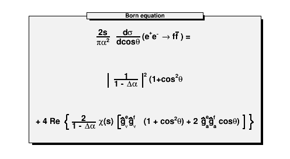
{
TCanvas ex3("ex3","Latex",500,300);
TPaveText pt(.1,.1,.9,.9);
pt.AddText("#frac{2s}{#pi#alpha^{2}} #frac{d#sigma}{dcos#theta} (e^{+}e^{-} #rightarrow f#bar{f} ) = ");
pt.AddText("#left| #frac{1}{1 - #Delta#alpha} #right|^{2} (1+cos^{2}#theta");
pt.AddText("+ 4 Re #left{ #frac{2}{1 - #Delta#alpha} #chi(s) #[]{#hat{g}_{#nu}^{e}#hat{g}_{#nu}^{f}
(1 + cos^{2}#theta) + 2 #hat{g}_{a}^{e}#hat{g}_{a}^{f} cos#theta) } #right}");
pt.SetLabel("Born equation");
pt.Draw();
return ex3;
}Interface to TMathText
The class TMathText is a TeX math formulae interpreter. It uses plain TeX syntax and uses "\" as control instead of "#". If a piece of text containing "\" is given to TLatex then TMathText is automatically invoked. Therefore, as histograms' titles, axis titles, labels etc ... are drawn using TLatex, the TMathText syntax can be used for them also.Function Members (Methods)
public:
| TLatex() | |
| TLatex(const TLatex& text) | |
| TLatex(Double_t x, Double_t y, const char* text) | |
| virtual | ~TLatex() |
| void | TObject::AbstractMethod(const char* method) const |
| virtual void | TObject::AppendPad(Option_t* option = "") |
| virtual void | TObject::Browse(TBrowser* b) |
| static TClass* | Class() |
| virtual const char* | TObject::ClassName() const |
| virtual void | TNamed::Clear(Option_t* option = "") |
| virtual TObject* | TNamed::Clone(const char* newname = "") const |
| virtual Int_t | TNamed::Compare(const TObject* obj) const |
| virtual void | Copy(TObject& text) const |
| virtual void | TObject::Delete(Option_t* option = "")MENU |
| Int_t | TAttLine::DistancetoLine(Int_t px, Int_t py, Double_t xp1, Double_t yp1, Double_t xp2, Double_t yp2) |
| virtual Int_t | TText::DistancetoPrimitive(Int_t px, Int_t py) |
| virtual void | TObject::Draw(Option_t* option = "") |
| virtual void | TObject::DrawClass() constMENU |
| virtual TObject* | TObject::DrawClone(Option_t* option = "") constMENU |
| TLatex* | DrawLatex(Double_t x, Double_t y, const char* text) |
| TLatex* | DrawLatexNDC(Double_t x, Double_t y, const char* text) |
| virtual TText* | TText::DrawText(Double_t x, Double_t y, const char* text) |
| virtual TText* | TText::DrawText(Double_t x, Double_t y, const wchar_t* text) |
| virtual TText* | TText::DrawTextNDC(Double_t x, Double_t y, const char* text) |
| virtual TText* | TText::DrawTextNDC(Double_t x, Double_t y, const wchar_t* text) |
| virtual void | TObject::Dump() constMENU |
| virtual void | TObject::Error(const char* method, const char* msgfmt) const |
| virtual void | TObject::Execute(const char* method, const char* params, Int_t* error = 0) |
| virtual void | TObject::Execute(TMethod* method, TObjArray* params, Int_t* error = 0) |
| virtual void | TText::ExecuteEvent(Int_t event, Int_t px, Int_t py) |
| virtual void | TObject::Fatal(const char* method, const char* msgfmt) const |
| virtual void | TNamed::FillBuffer(char*& buffer) |
| virtual TObject* | TObject::FindObject(const char* name) const |
| virtual TObject* | TObject::FindObject(const TObject* obj) const |
| virtual Rectangle_t | TText::GetBBox() |
| virtual TPoint | TText::GetBBoxCenter() |
| virtual void | GetBoundingBox(UInt_t& w, UInt_t& h, Bool_t angle = kFALSE) |
| virtual void | TText::GetControlBox(Int_t x, Int_t y, Double_t theta, Int_t* cBoxX, Int_t* cBoxY) |
| virtual Option_t* | TObject::GetDrawOption() const |
| static Long_t | TObject::GetDtorOnly() |
| Double_t | GetHeight() const |
| virtual const char* | TObject::GetIconName() const |
| virtual Color_t | TAttLine::GetLineColor() const |
| virtual Style_t | TAttLine::GetLineStyle() const |
| virtual Width_t | TAttLine::GetLineWidth() const |
| virtual const char* | TNamed::GetName() const |
| virtual char* | TObject::GetObjectInfo(Int_t px, Int_t py) const |
| static Bool_t | TObject::GetObjectStat() |
| virtual Option_t* | TObject::GetOption() const |
| virtual void | TText::GetTextAdvance(UInt_t& a, const char* text, const Bool_t kern = kTRUE) const |
| virtual Short_t | TAttText::GetTextAlign() const |
| virtual Float_t | TAttText::GetTextAngle() const |
| virtual void | TText::GetTextAscentDescent(UInt_t& a, UInt_t& d, const char* text) const |
| virtual void | TText::GetTextAscentDescent(UInt_t& a, UInt_t& d, const wchar_t* text) const |
| virtual Color_t | TAttText::GetTextColor() const |
| virtual void | TText::GetTextExtent(UInt_t& w, UInt_t& h, const char* text) const |
| virtual void | TText::GetTextExtent(UInt_t& w, UInt_t& h, const wchar_t* text) const |
| virtual Font_t | TAttText::GetTextFont() const |
| virtual Float_t | TAttText::GetTextSize() const |
| virtual const char* | TNamed::GetTitle() const |
| virtual UInt_t | TObject::GetUniqueID() const |
| const void* | TText::GetWcsTitle() const |
| Double_t | TText::GetX() const |
| Double_t | GetXsize() |
| Double_t | TText::GetY() const |
| Double_t | GetYsize() |
| virtual Bool_t | TObject::HandleTimer(TTimer* timer) |
| virtual ULong_t | TNamed::Hash() const |
| virtual void | TObject::Info(const char* method, const char* msgfmt) const |
| virtual Bool_t | TObject::InheritsFrom(const char* classname) const |
| virtual Bool_t | TObject::InheritsFrom(const TClass* cl) const |
| virtual void | TObject::Inspect() constMENU |
| void | TObject::InvertBit(UInt_t f) |
| virtual TClass* | IsA() const |
| virtual Bool_t | TObject::IsEqual(const TObject* obj) const |
| virtual Bool_t | TObject::IsFolder() const |
| Bool_t | TObject::IsOnHeap() const |
| virtual Bool_t | TNamed::IsSortable() const |
| Bool_t | TObject::IsZombie() const |
| virtual void | TText::ls(Option_t* option = "") const |
| void | TObject::MayNotUse(const char* method) const |
| virtual void | TAttText::Modify() |
| virtual Bool_t | TObject::Notify() |
| void | TObject::Obsolete(const char* method, const char* asOfVers, const char* removedFromVers) const |
| static void | TObject::operator delete(void* ptr) |
| static void | TObject::operator delete(void* ptr, void* vp) |
| static void | TObject::operator delete[](void* ptr) |
| static void | TObject::operator delete[](void* ptr, void* vp) |
| void* | TObject::operator new(size_t sz) |
| void* | TObject::operator new(size_t sz, void* vp) |
| void* | TObject::operator new[](size_t sz) |
| void* | TObject::operator new[](size_t sz, void* vp) |
| virtual void | Paint(Option_t* option = "") |
| virtual void | TText::PaintControlBox(Int_t x, Int_t y, Double_t theta) |
| virtual void | PaintLatex(Double_t x, Double_t y, Double_t angle, Double_t size, const char* text) |
| virtual void | TText::PaintText(Double_t x, Double_t y, const char* text) |
| virtual void | TText::PaintText(Double_t x, Double_t y, const wchar_t* text) |
| virtual void | TText::PaintTextNDC(Double_t u, Double_t v, const char* text) |
| virtual void | TText::PaintTextNDC(Double_t u, Double_t v, const wchar_t* text) |
| virtual void | TObject::Pop() |
| virtual void | TText::Print(Option_t* option = "") const |
| virtual Int_t | TObject::Read(const char* name) |
| virtual void | TObject::RecursiveRemove(TObject* obj) |
| virtual void | TAttLine::ResetAttLine(Option_t* option = "") |
| virtual void | TAttText::ResetAttText(Option_t* toption = "") |
| void | TObject::ResetBit(UInt_t f) |
| virtual void | TObject::SaveAs(const char* filename = "", Option_t* option = "") constMENU |
| virtual void | TAttLine::SaveLineAttributes(basic_ostream<char,char_traits<char> >& out, const char* name, Int_t coldef = 1, Int_t stydef = 1, Int_t widdef = 1) |
| virtual void | SavePrimitive(ostream& out, Option_t* option = "") |
| virtual void | TAttText::SaveTextAttributes(basic_ostream<char,char_traits<char> >& out, const char* name, Int_t alidef = 12, Float_t angdef = 0, Int_t coldef = 1, Int_t fondef = 61, Float_t sizdef = 1) |
| virtual void | TText::SetBBoxCenter(const TPoint& p) |
| virtual void | TText::SetBBoxCenterX(const Int_t x) |
| virtual void | TText::SetBBoxCenterY(const Int_t y) |
| virtual void | TText::SetBBoxX1(const Int_t x) |
| virtual void | TText::SetBBoxX2(const Int_t x) |
| virtual void | TText::SetBBoxY1(const Int_t y) |
| virtual void | TText::SetBBoxY2(const Int_t y) |
| void | TObject::SetBit(UInt_t f) |
| void | TObject::SetBit(UInt_t f, Bool_t set) |
| virtual void | TObject::SetDrawOption(Option_t* option = "")MENU |
| static void | TObject::SetDtorOnly(void* obj) |
| virtual void | SetIndiceSize(Double_t factorSize) |
| virtual void | SetLimitIndiceSize(Int_t limitFactorSize) |
| virtual void | TAttLine::SetLineAttributes()MENU |
| virtual void | TAttLine::SetLineColor(Color_t lcolor) |
| virtual void | TAttLine::SetLineColorAlpha(Color_t lcolor, Float_t lalpha) |
| virtual void | TAttLine::SetLineStyle(Style_t lstyle) |
| virtual void | TAttLine::SetLineWidth(Width_t lwidth) |
| virtual void | TText::SetMbTitle(const wchar_t* title = L"")MENU |
| virtual void | TNamed::SetName(const char* name)MENU |
| virtual void | TNamed::SetNameTitle(const char* name, const char* title) |
| virtual void | TText::SetNDC(Bool_t isNDC = kTRUE) |
| static void | TObject::SetObjectStat(Bool_t stat) |
| virtual void | TText::SetText(Double_t x, Double_t y, const char* text)MENU |
| virtual void | TText::SetText(Double_t x, Double_t y, const wchar_t* text) |
| virtual void | TAttText::SetTextAlign(Short_t align = 11) |
| virtual void | TAttText::SetTextAngle(Float_t tangle = 0)MENU |
| virtual void | TAttText::SetTextAttributes()MENU |
| virtual void | TAttText::SetTextColor(Color_t tcolor = 1) |
| virtual void | TAttText::SetTextColorAlpha(Color_t tcolor, Float_t talpha) |
| virtual void | TAttText::SetTextFont(Font_t tfont = 62) |
| virtual void | TAttText::SetTextSize(Float_t tsize = 1) |
| virtual void | TAttText::SetTextSizePixels(Int_t npixels) |
| virtual void | TNamed::SetTitle(const char* title = "")MENU |
| virtual void | TObject::SetUniqueID(UInt_t uid) |
| virtual void | TText::SetX(Double_t x)MENU |
| virtual void | TText::SetY(Double_t y)MENU |
| virtual void | ShowMembers(TMemberInspector&) |
| virtual Int_t | TNamed::Sizeof() const |
| virtual void | Streamer(TBuffer&) |
| void | StreamerNVirtual(TBuffer& ClassDef_StreamerNVirtual_b) |
| virtual void | TObject::SysError(const char* method, const char* msgfmt) const |
| Bool_t | TObject::TestBit(UInt_t f) const |
| Int_t | TObject::TestBits(UInt_t f) const |
| virtual void | TObject::UseCurrentStyle() |
| virtual void | TObject::Warning(const char* method, const char* msgfmt) const |
| virtual Int_t | TObject::Write(const char* name = 0, Int_t option = 0, Int_t bufsize = 0) |
| virtual Int_t | TObject::Write(const char* name = 0, Int_t option = 0, Int_t bufsize = 0) const |
protected:
| TLatexFormSize | Anal1(TextSpec_t spec, const Char_t* t, Int_t length) |
| TLatexFormSize | Analyse(Double_t x, Double_t y, TextSpec_t spec, const Char_t* t, Int_t length) |
| Int_t | CheckLatexSyntax(TString& text) |
| virtual void | TObject::DoError(int level, const char* location, const char* fmt, va_list va) const |
| void | DrawCircle(Double_t x1, Double_t y1, Double_t r, TextSpec_t spec) |
| void | DrawLine(Double_t x1, Double_t y1, Double_t x2, Double_t y2, TextSpec_t spec) |
| void | DrawParenthesis(Double_t x1, Double_t y1, Double_t r1, Double_t r2, Double_t phimin, Double_t phimax, TextSpec_t spec) |
| TLatexFormSize | FirstParse(Double_t angle, Double_t size, const Char_t* text) |
| void | TObject::MakeZombie() |
| TLatex& | operator=(const TLatex&) |
| Int_t | PaintLatex1(Double_t x, Double_t y, Double_t angle, Double_t size, const char* text) |
| TLatexFormSize | Readfs() |
| void | Savefs(TLatexFormSize* fs) |
Data Members
public:
| enum { | kTextNDC | |
| }; | ||
| enum TText::[unnamed] { | kTextNDC | |
| }; | ||
| enum TObject::EStatusBits { | kCanDelete | |
| kMustCleanup | ||
| kObjInCanvas | ||
| kIsReferenced | ||
| kHasUUID | ||
| kCannotPick | ||
| kNoContextMenu | ||
| kInvalidObject | ||
| }; | ||
| enum TObject::[unnamed] { | kIsOnHeap | |
| kNotDeleted | ||
| kZombie | ||
| kBitMask | ||
| kSingleKey | ||
| kOverwrite | ||
| kWriteDelete | ||
| }; |
protected:
| const Char_t* | fError | !error code |
| Double_t | fFactorPos | !Relative position of subscripts and superscripts |
| Double_t | fFactorSize | !Relative size of subscripts and superscripts |
| Bool_t | fItalic | !Currently inside #it operator |
| Int_t | fLimitFactorSize | lower bound for subscripts/superscripts size |
| Color_t | TAttLine::fLineColor | line color |
| Style_t | TAttLine::fLineStyle | line style |
| Width_t | TAttLine::fLineWidth | line width |
| TString | TNamed::fName | object identifier |
| Double_t | fOriginSize | Font size of the starting font |
| Int_t | fPos | !Current position in array fTabSize; |
| Bool_t | fShow | !is true during the second pass (Painting) |
| Int_t | fTabMax | !Maximum allocation for array fTabSize; |
| FormSize_t* | fTabSize | !array of values for the different zones |
| Short_t | TAttText::fTextAlign | Text alignment |
| Float_t | TAttText::fTextAngle | Text angle |
| Color_t | TAttText::fTextColor | Text color index |
| Font_t | TAttText::fTextFont | Text font number |
| Float_t | TAttText::fTextSize | Text size |
| TString | TNamed::fTitle | object title |
| void* | TText::fWcsTitle | !Used by TMathText |
| Double_t | TText::fX | X position of text (left,center,etc..) |
| Double_t | TText::fY | Y position of text (left,center,etc..) |
Class Charts


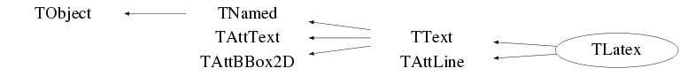
Function documentation
TLatexFormSize Analyse(Double_t x, Double_t y, TextSpec_t spec, const Char_t* t, Int_t length)
Analyse and paint the TLatex formula It is called twice : first for calculating the size of each portion of the formula, then to paint the formula. When analyse finds an operator or separator, it calls itself recursively to analyse the arguments of the operator. when the argument is an atom (normal text), it calculates the size of it and return it as the result. for example : if the operator #frac{arg1}{arg2} is found : Analyse(arg1) return the size of arg1 (width, up, down) Analyse(arg2) return the size of arg2 now, we know the size of #frac{arg1}{arg2} : width = max(width_arg1, width_arg2) up = up_arg1 + down_arg1 down = up_arg2 + down_arg2 so, when the user wants to paint a fraction at position (x,y), the rect used for the formula is : (x,y-up,x+width,y+down) return size of zone occupied by the text/formula t : chain to be analyzed length : number of chars in t.
TLatex * DrawLatex(Double_t x, Double_t y, const char* text)
Make a copy of this object with the new parameters And copy object attributes
TLatex * DrawLatexNDC(Double_t x, Double_t y, const char* text)
void DrawLine(Double_t x1, Double_t y1, Double_t x2, Double_t y2, TextSpec_t spec)
Draw a line in a Latex formula
void DrawCircle(Double_t x1, Double_t y1, Double_t r, TextSpec_t spec)
Draw an arc of ellipse in a Latex formula (right or left parenthesis)
void DrawParenthesis(Double_t x1, Double_t y1, Double_t r1, Double_t r2, Double_t phimin, Double_t phimax, TextSpec_t spec)
Draw an arc of ellipse in a Latex formula (right or left parenthesis)
void PaintLatex(Double_t x, Double_t y, Double_t angle, Double_t size, const char* text)
Main drawing function Warning: Unlike most others "XYZ::PaintXYZ" methods, PaintLatex modifies the TLatex data members.
Int_t PaintLatex1(Double_t x, Double_t y, Double_t angle, Double_t size, const char* text)
Drawing function
TLatexFormSize FirstParse(Double_t angle, Double_t size, const Char_t* text)
First parsing of the analyse sequence
void SavePrimitive(ostream& out, Option_t* option = "")
Save primitive as a C++ statement(s) on output stream out
void SetLimitIndiceSize(Int_t limitFactorSize)
Set limit for text resizing of subscipts and superscripts